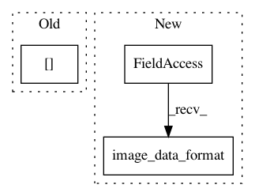

8fea14b0b3b0358a9a74cb75c675dcb4f8abe2e3,snntoolbox/parsing/utils.py,AbstractModelParser,parse,#AbstractModelParser#,77
Before Change
if layer_type == "GlobalAveragePooling2D":
print("Replacing GlobalAveragePooling by AveragePooling "
"plus Flatten.")
pool_size = [layer.input_shape[-2], layer.input_shape[-1]]
self._layer_list.append(
{"layer_type": "AveragePooling2D",
"name": self.get_name(layer, idx, "AveragePooling2D"),
After Change
"parameters of previous {}.".format(prev_layer_type))
args = parameters + parameters_bn
kwargs = {"axis": axis, "image_data_format":
keras.backend.image_data_format(),
"is_depthwise": prev_layer_type == "DepthwiseConv2D"}
self._layer_list[prev_layer_idx]["parameters"] = \
absorb_bn_parameters(*args, **kwargs)
In pattern: SUPERPATTERN
Frequency: 3
Non-data size: 3
Instances
Project Name: NeuromorphicProcessorProject/snn_toolbox
Commit Name: 8fea14b0b3b0358a9a74cb75c675dcb4f8abe2e3
Time: 2019-08-15
Author: bodo.rueckauer@intel.com
File Name: snntoolbox/parsing/utils.py
Class Name: AbstractModelParser
Method Name: parse
Project Name: fizyr/keras-retinanet
Commit Name: cc57b5709875c51960cbe821cde6ce4eea59c3d9
Time: 2018-08-03
Author: h.gaiser@fizyr.com
File Name: keras_retinanet/layers/_misc.py
Class Name: Anchors
Method Name: call
Project Name: fizyr/keras-retinanet
Commit Name: 49531b8c7d0c992aa7d2d5913209b14717324a11
Time: 2018-07-17
Author: h.gaiser@fizyr.com
File Name: keras_retinanet/layers/_misc.py
Class Name: ClipBoxes
Method Name: call